DHRUV AGRAWAL, ETH Zürich, Switzerland and DisneyResearch|Studios, Switzerland JAKOB BUHMANN, DisneyResearch|Studios, Switzerland DOMINIK BORER, DisneyResearch|Studios, Switzerland ROBERT W. SUMNER, DisneyResearch|Studios, Switzerland and ETH Zürich, Switzerland
MARTIN GUAY, DisneyResearch|Studios, Switzerland

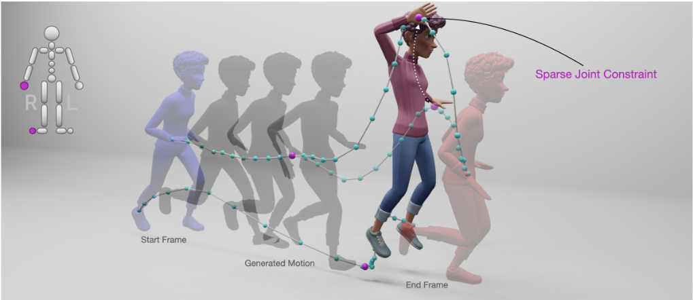
Authoring 3D motions is a laborious process that requires manipulating and coordinating many control handles over time. Neural motion representations learned from large motion datasets have recently shown impressive capabilities in many motion completion tasks. However, current methods are not designed for interactive motion authoring workflows. The reasons being their requirement of a dense context of full poses, which takes considerable time to author, as well as their lack of joint-level controls for refinement. In this paper, we introduce a Neural Motion Rig called SKEL-Betweener,
Authors' addresses: Dhruv Agrawal, ETH Zürich, Zürich, Switzerland and DisneyResearch|Studios, Zürich, Switzerland, dhruv.agrawal@inf.ethz.ch; Jakob Buhmann, DisneyResearch|Studios, Zürich, Switzerland, jakob.buhmann@disneyresearch. com; Dominik Borer, DisneyResearch|Studios, Zürich, Switzerland, dominik.borer@ disneyresearch.com; Robert W. Sumner, DisneyResearch|Studios, Zürich, Switzerland and ETH Zürich, Zürich, Switzerland, sumner@disneyresearch.com; Martin Guay, DisneyResearch|Studios, Zürich, Switzerland, martin.guay@disneyresearch.com.
Permission to make digital or hard copies of all or part of this work for personal or classroom use is granted without fee provided that copies are not made or distributed for profit or commercial advantage and that copies bear this notice and the full citation on the first page. Copyrights for components of this work owned by others than the author(s) must be honored. Abstracting with credit is permitted. To copy otherwise, or republish, to post on servers or to redistribute to lists, requires prior specific permission and/or a fee. Request permissions from permissions@acm.org.
© 2024 Copyright held by the owner/author(s). Publication rights licensed to ACM. 0730-0301/2024/12-ART247 $15.00
https://doi.org/10.1145/3687941
tailored to interactive motion authoring. SKEL-Betweener is able to generate long motion sequences from two poses only, and enables intermediate motion authoring via neural motion curves-intuitive joint-level controls for positions and orientations. Through user evaluations, we demonstrate the effectiveness of our Neural Motion Rig for efficiently creating and editing motions.
CCS Concepts: · Computing methodologies ! Animation; Motion processing; Graphics systems and interfaces; · Human-centered computing ! Interaction design.
Additional Key Words and Phrases: Motion Completion, Skeletal Neural Network
ACM Reference Format:
Dhruv Agrawal, Jakob Buhmann, Dominik Borer, Robert W. Sumner, and Martin Guay. 2024. SKEL-Betweener: a Neural Motion Rig for Interactive Motion Authoring. ACM Trans. Graph. 43, 6, Article 247 (December 2024), 11 pages. https://doi.org/10.1145/3687941
1 INTRODUCTION
Animating a 3D character is a time-intensive task, where animators manipulate many rig controls at many time steps, so called keyframes, while using interpolation to fill smooth parts of the motion. To facilitate animation, artists should be able to control a minimum number of handles to achieve their vision. Data driven systems such as [Qin et al. 2022] and [Oreshkin et al. 2023] have the potential to accelerate motion authoring, by leveraging correlations complete movements. However, current learning-based methods still have two main limitations that prevent adoption.
First, they require animators to provide a dense context. While animators are able to quickly layout sparse poses, crafting dense sequences of consecutive frames is significantly more time-consuming. Second, current methods only offer providing full or half body constraints-as opposed to individual handles-as shown in Fig. 2a. However, animators have a strong artistic vision and need to be able to refine the generated motion in real-time. Hence, in order to explore and refine movements, animators must add multiple full body keyframes, which takes considerable more time.
In this paper, we introduce Skel-Betweener, a Neural Motion Rig that generates complete motions from sparse poses and control handles, such as positions and orientation widgets. The user starts by crafting poses and our motion rig generates the full motion between those poses. Then the user can refine the generated motion in real-time by manipulating neural motion curves that are part of the rig. For example, one can add a jump inside a running sequence by manipulating a few handles, as shown in our video. Neural motion curves can be manipulated directly in the scene for 3D trajectories, as well as in 1D for rotations using the graph editor, which animators use extensively.
Additionally, we go a step further and tackle motion editing. For example, one might want to alter captured motion, or motion generated from text [Tevet et al. 2023], but current models generate movements only considering constraints while disregarding the pre-existing motion. Unfortunately, learning to preserve an existing motion is a challenge due to the lack of paired data. We solve this problem by simulating motion editing, using SKEL-Betweener, and use this data to train a motion-preserving version of our model. This way, the generated motion is trained to remain close to the pre-existing motion, while remaining malleable via neural motion curves.
Through evaluation, we show that our Neural Motion Rig provides an efficient interface for motion authoring. For example, authoring the run and jump sequence in our video takes one hour using traditional tools, while it can be authored within a few minutes using our Neural Motion Rig. We formally validate the improved animation workflow within a user study. Lastly, we validate our improved constraint accuracy by comparing to state of the art on different benchmarks.
2 RELATEDWORK
Authoring software such as Maya [Autodesk 2024] and Blender [Blender Foundation 2024] provide keyframe interpolation as a way to author movements by creating keyframes (joint angles and IK position targets), that are interpolated with parametric curves. Motion editing can be performed by using layers of additive motions where modifications over a time window are keyframed on a additive layer [Witkin and Popovic 1995]. Crafting motions this way is timeconsuming and researchers have explored using optimization to solve for free parameters automatically [Ciccone et al. 2019; Gleicher 1997; Lee and Shin 1999].

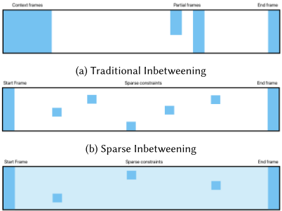
Fig. 2. Input patterns of constraints (blue) for joints (vertical axis) over time (horizontal axis). In previous inbetweening models such as [Qin et al. 2022], a dense context and an end frame must be provided, as shown in (a). In addition partial or full constrained frames may be given. In contrast, our method (SKEL-Betweener) shown in (b) only requires two frames, and enables individual joint level controls. Lastly, we unlock motion editing via a motion-preservation bias, which is illustrated with soft blue in (c).
[Gleicher 1997] optimize directly in the dense space of skeletons over time, while both [Ciccone et al. 2019] and [Lee and Shin 1999] optimize in the reduced space of parametric curves such as bezier curves (tangents and positions). While these methods are appealing, they do not take into account data statistics, often resulting in spurious local minima. Statistical motion modeling has been explored in the mid 2000s to author movements from few handles by constraining optimization to a subspace [Chai and Hodgins 2007; Min et al. 2009]. However these early explorations were limited to small datasets and could not generalize to large datasets in a single model.
2.1 Learned Motion Completion
Deep neural networks have emerged in recent years as a general framework capable of training a single model from entire motion datasets. Early efforts for inbetweening took dense context of past poses together with a target pose, to predict the frames between, using auto-regressive models [Harvey and Pal 2018; Harvey et al. 2020]. Improvements came from time encoding [Harvey et al. 2020] and a phase label [Starke et al. 2022] similar to motion-specific time encoding in [Starke et al. 2023]. The work of [Tang et al. 2022] split the model into two with a pre-trained motion VAE model [Ling et al. 2020], together with an auto-regressive sampler tailored to improving leg motion, including using a phase label recently [Tang et al. 2023]. Unfortunately, auto-regressive models cannot be easily extended to satisfy arbitrary sparse constraints, rendering these models inconvenient for expressive motion authoring.
Closest to our work, are methods using transformer encoders [Oreshkin et al. 2023; Qin et al. 2022; Zheng et al. 2023] operating on the motion sequence. Oreshkin et al. [2023] show empirically that learning deltas to interpolated keyframes improves performance.
[Qin et al. 2022] use a mask for constraints and have first encoder that can only attend to constraints. This results in low frequency motions with a loss of details, and thus a second transformer-able to attend to all frames in between-is then recovering more details. While they show impressive results, it cannot be used for direct manipulation of sparse joint-level constraints. In the context of vision, [Zheng et al. 2023] developed a joint-level model to complete partial and noisy signals.
2.1.1 Diffusion Models. Diffusion models applied to motion have gained popularity [Karunratanakul et al. 2023a,b; Tevet et al. 2023; Tseng et al. 2022; Xie et al. 2024], partly due to their success in the image domain. Motion Diffusion Model (MDM) [Tevet et al. 2023], together with EDGE [Tseng et al. 2022], were the first adaptations to the motion domain. Both models use transformer encoders and diffuse in motion space, given text or music conditions respectively.
To satisfy constraints, [Karunratanakul et al. 2023b] entangle the constraints into the entire motion sequence using a fixed projection matrix. Both [Xie et al. 2024] and [Karunratanakul et al. 2023a] explore optimizing MDM to further improve matching constraints. While the state of the art is improving, stochastic models remain less accurate than deterministic models. Coupled with slower inference, these models remain less suitable for motion authoring. Additionally, since our motion editing model can be conditioned on dense data, our work is complementary, enabling further refinement after motion generation.
More recently, [Cohan et al. 2024] specifically train a diffusion model for motion inbetweening. They use inpainting during training and inference to ensure that the model always sees a clean condition signal. They further support conditioning on joint trajectories, however also cannot handle sparser constraints.
2.2 Neural Motion Editing
[Holden et al. 2016] learn a motion manifold and perform motion editing by optimizing in this learnt space. However, they cannot edit arbitrary motion clips and only support editing their own motion generated from trajectories or target location.
The challenge with editing existing motion with machine learning is the lack of paired data between original motion, edit and final motion. Recently though, [Agrawal et al. 2023] demonstrated motion editing at the pose level by training for pose smoothness to the original pose (they called the base pose), by randomly sampling poses as base pose during training. While this can be effective, it lacks full motion coherence and can result in visual artifacts. In contrast, our model has full temporal coherence, but is trained with sensible motion editing data. To generate this data we use our SKELBetweener model, which we detail in the next section.
3 SKEL-BETWEENER
Recent motion models [Qin et al. 2022; Tevet et al. 2023] inspired by language models [Ranathunga et al. 2023; Zhang et al. 2024] and use transformers [Vaswani et al. 2017] with global attention, best suited for long range dependencies. However, motion has arguably shorter causal dependencies and thus motion authoring requires more local control. To better capture these local dependencies, we use a graph neural network, similar to [Agrawal et al. 2023] with multiple graph transformer layers [Dwivedi and Bresson 2021].
By using a skeletal graph network operating on the joints of the skeleton, we can provide joint-level control, passing messages to a joint's neighborhood-both in space and time-through a skeletal transformer. In total, our model consists of three parts: a joint encoder, a skeletal transformer, and a joint decoder, as illustrated in Fig. 3.
3.1 Feature Space
Animators often manipulate world positions for inverse kinematics, look-ats and pull vectors. As our model operates at the joint level, we define a motion as {G0, GC , . . . , G) }, where GC 2 {?>B, A>C} are global positions, orientations of that joint at time C . We use 6D representation [Zhou et al. 2019] for orientations, which provides uniqueness and better continuity than quaternions. Additionally, for the feet joints, we add a binary ground contact variable. For all other joints, it is set to 0.
Inline mathematical symbols may be misdecoded — view original paragraph

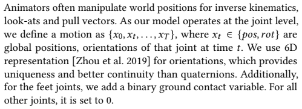
Since our model operates directly on the skeletal data, the way we initialise the motion affects the results. Empirically, we found that initializing the motion by interpolating the sparse controls (the blue squares in Fig. 2b), yielded more accurate inference. We use linear and spherical interpolation for positions and orientations respectively to give dense initial positions ?>B 2 R) ⇥u1D43D ⇥3 , and orientation >A84=C 2 R)⇥u1D43D ⇥6 . For the feet joints, the contact label is set to 0.5 for unknown frames while for the remaining joints it is always set to 0, giving 2>=C02C 2 R) ⇥u1D43D ⇥1 . Lastly, to inform the model of which data is a constraint, we concatenate the masks <0B:⇤ 2 R) ⇥u1D43D ⇥1 where ⇤ 2 {?>B, >A84=C, 2>=C02C}. Next, we describe how to transform interpolated motion into detailed motion.
Inline mathematical symbols may be misdecoded — view original paragraph

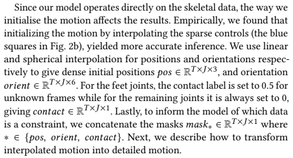
3.2 Joint Encoder
Similar to [Agrawal et al. 2023], each node in the skeletal transformer is represented by two vectors #>344<1 and #>34BC0C4 , each of dimension ⌘. The task of the joint encoder is to map the input data to these vectors. The first vector, #>344<1 , represents the identity of the node. For a node, [ 9 C , this includes a linear joint embedding of a one-hot vector for joint 9 , a sinusoidal positional encoding for the time C , and the masks<0B:⇤ indicating if the joint is constrained. For a complete motion clip, these vectors can be calculated as:
Inline mathematical symbols may be misdecoded — view original paragraph

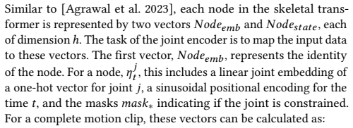

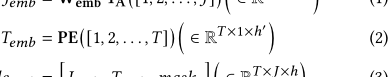

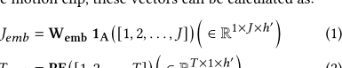

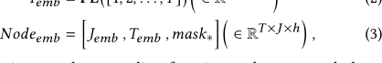
where 1A is a one-hot encoding function and we expand along appropriate dimensions in Eq. (3) to construct the tuple. The second vector, #>34BC0C4 , refers to the current value of the node. This includes the position, orientation, and the contact label. It is initialized by concatenating ?>B, >A84=C , and 2>=C02C and embedding them using a fully connected network to give #>34BC0C4 2 R) ⇥u1D43D ⇥⌘ .
Inline mathematical symbols may be misdecoded — view original paragraph

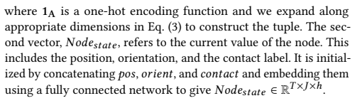
3.3 Skeletal Transformer
The skeletal transformer contains a node [ 9 C for each joint 9 at each time frame C . Therefore, for a motion clip with ) frames and a skeleton with u1D43D joints, the total number of nodes is ) ⇥ u1D43D . In our skeletal transformer, this connectivity between space and time are modelled via the attention mechanism.


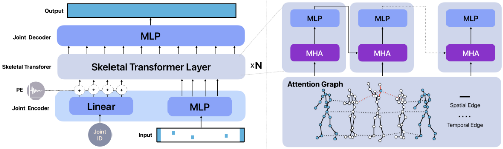
For example, in Fig. 3, consider the left elbow in the third frame. It can attend to its spatial neighbors, the shoulder and the wrist in the third frame, and to its temporal neighbors, the elbow in the second and the fourth frame.
The skeletal transformer consists of # = 18 layers. Each transformer layer consists of a Skeletal Multi-Head Attention layer, a feed forward network, and a residual connection. In the case of no intermediate constraints, the information flows from the constrained exterior start and end frames to the unconstrained inner middle frames due to local structure of the graph. Specifying intermediate constraints can accelerate this process as we get short windows with no information.
Inline mathematical symbols may be misdecoded — view original paragraph

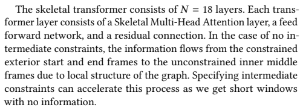
Since the state of the constrained nodes is already given, the transformer layers then only updates the unconstrained node states to regress the full motion in a latent space. The Multi-Head Attention block uses #>344<1 as the keys and queries and #>34BC0C4 as the values followed by a parallelized feed forward layer. Therefore, the operation of each transformer layer 8 is given by:
Inline mathematical symbols may be misdecoded — view original paragraph

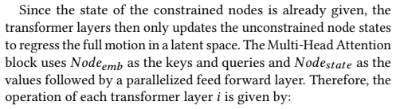

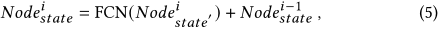

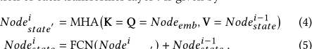
where #>348BC0C4 are the node states after the 8 C⌘ transformer layer.
Inline mathematical symbols may be misdecoded — view original paragraph

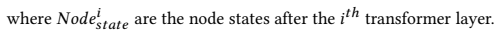
3.4 Joint Decoder
The joint decoder then uses a feed forward network to extract the global positions, global orientations, and contact labels.
The global orientations are then converted to local orientations according to the skeleton hierarchy. The global positions are used for additional supervision, but because the bone lengths might not be constant across frames it is discarded during inference, as it would lead to artifacts when applying to a skinned mesh. And lastly, for the feet joints, contact labels are decoded and a sigmoid function is applied to bound them in the interval [0, 1].
3.5 Loss Function
We split our loss functions L(⌫ = L' + Lu1D43B + L⇠ into three losses: Reconstruction L' , Handles Lu1D43B , and Contacts L⇠ .
Inline mathematical symbols may be misdecoded — view original paragraph

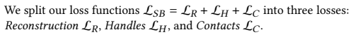
3.5.1 Reconstruction. This loss supervises the predicted local orientations d A>C; , global positions d ?>B6, and global orientations d A>C6 . We compute the !2 loss for the positions and⌧4>34B82 loss for orientations, which measures the angle on the great arc between two orientations. The losses are formulated as:
Inline mathematical symbols may be misdecoded — view original paragraph

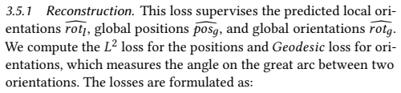

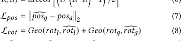

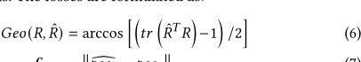

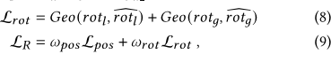
where ' and ˆ ' are rotation matrices and l⇤ is a scalar weight for the respective terms.
Inline mathematical symbols may be misdecoded — view original paragraph

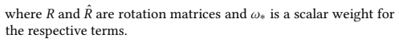
3.5.2 Handles. Without additional supervision, intermediate constraints are ignored as they are much sparser than the full motion, and are randomly scattered throughout the motion sequence. Therefore, we add an additional loss similar to L' that only measures the loss on the constrained positions and rotations. This can be applied using<0B:⇤ as follows:
Inline mathematical symbols may be misdecoded — view original paragraph

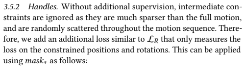

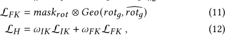

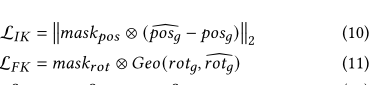
where ⌦ is an element-wise multiplication.
Inline mathematical symbols may be misdecoded — view original paragraph

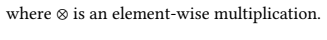
3.5.3 Contacts. To reduce foot sliding, we supervise the ground contact labels and corresponding foot velocities, similar to [Qin et al. 2022] and [Tevet et al. 2023]:

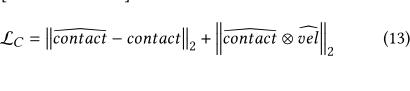

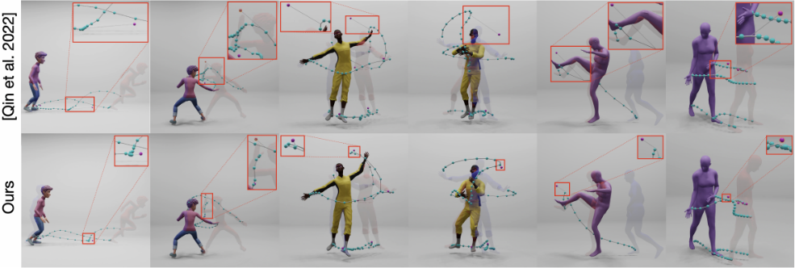
![Fig. 5. In order to build paired data of motion end edited motion, we use a pre-trained SKEL-Betweener model. We first sample from our dataset a motion shown here in red. Then we sample two disjoint sets of constraints: the blue and red spheres. We use the blue spheres to generate the cyan motion using the pre-trained SKEL-Betweener. Then to train a model for motion preservation, we use the red spheres as constraints, the cyan motion as base motion, and the red motion as the target ground truth. This way the motion-preserving model, shown in green, is exposed to the notion of preserving un-constrained parts of the motion.](assets/0077-picture.png)
4 MOTION EDITING
Recently, [Agrawal et al. 2023] trained an inverse kinematics pose model that preserves traits from a base pose by initializing the model with a randomized base pose and using a pose preservation loss. Unfortunately, naively extending this to motion, where random clips are sampled as base motion, results in poor motion preservation and poor constraints satisfaction. We postulate as the potential difference between two motion clips grows exponentially with the length of the clips, the reconstruction and motion preservation losses become adversarial and inhibit meaningful learning. Hence, we take care to generate more sensible motions during training by using our SKEL-Betweener model as described below.
4.1 Data Generation for Motion Editing
Our approach is illustrated in Fig. 5. Given a ground truth clip with high frequency details, we sample two disjoint sets of positional constraints. By evaluating our SKEL-Betweener model with only one set of the constraints, we can generate a new motion clip that has realistic motion and contains a subset of all high frequency details of the original motion clip. This way, the original motion clip can now be viewed as an edited version of the generated motion with the first set of constraints. In analogy to [Agrawal et al. 2023], we refer to the unedited clip as the base motion.
4.2 Training for Motion Editing
With the generated pairs of edited and unedited motion, we can extend our model to perform motion editing. We use the identical architecture as for inbetweening with the addition that the joint states are initialized with the base motion. The model is then trained to reach the additional constraints (red discs in Fig. 5) and reconstruct the original motion. In addition to L(⌫ , we add a loss for Base Motion Preservation L⌫" to further supervise the predicted motion to stick to the initial base motion:
Inline mathematical symbols may be misdecoded — view original paragraph

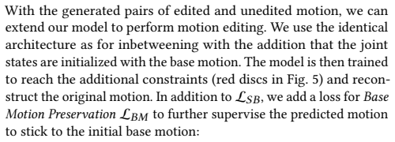

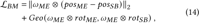
where ?>B"⇢ and A>C"⇢ are predicted world positions and orientations from the motion editing model, and ?>B(⌫ and A>C(⌫ are the position and orientation from our pre-trained inbetweening model. l"⇢ is a weight mask applied to individual frames such that frames close to a constraint are less penalized for editing the base motion.
Inline mathematical symbols may be misdecoded — view original paragraph

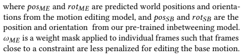
Hence, the complete motion editing loss function is L"⇢ = L(⌫ + l⌫"L⌫" where l⌫" gives the relative weight for the base motion preservation loss.
Inline mathematical symbols may be misdecoded — view original paragraph

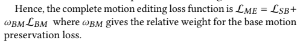
5 EVALUATION
To evaluate our model, we show reconstruction results on multiple datasets and compare with an adapted version of the TwoStage model [Qin et al. 2022] that allows for editing sparse constraints. We do so by providing all input in world coordinates together with only the boundary frames, as opposed to dense context (see Fig. 2b for schematic). Additionally, we show the qualitative performance of our model for iteratively authoring a motion sequence.

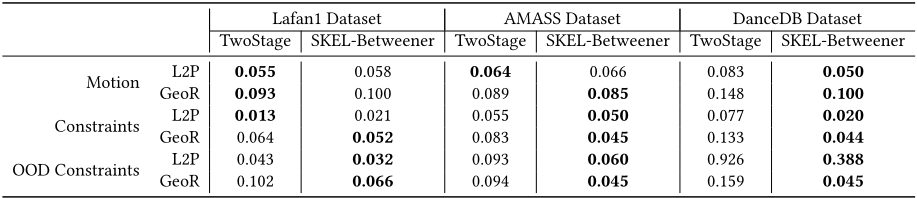
Recognized table text (check against the image)
| Lafan1 Dataset | AMASS Dataset | DanceDB Dataset | |||||
|---|---|---|---|---|---|---|---|
| TwoStage | SKEL-Betweener | TwoStage | SKEL-Betweener | TwoStage | SKEL-Betweener | ||
| Motion | L2P | 0.055 | 0.058 | 0.064 | 0.066 | 0.083 | 0.050 |
| GeoR | 0.093 | 0.100 | 0.089 | 0.085 | 0.148 | 0.100 | |
| Constraints | L2P | 0.013 | 0.021 | 0.055 | 0.050 | 0.077 | 0.020 |
| GeoR | 0.064 | 0.052 | 0.083 | 0.045 | 0.133 | 0.044 | |
| OOD Constraints | L2P | 0.043 | 0.032 | 0.093 | 0.060 | 0.926 | 0.388 |
| GeoR | 0.102 | 0.066 | 0.094 | 0.045 | 0.159 | 0.045 | |
We compare our model with a modified TwoStage model on Lafan1[Harvey et al. 2020], AMASS[Mahmood et al. 2019], and DanceDB [Tsuchida et al. 2019] datasets. For all datasets, we train both models with variable window lengths between 10 and 30 frames. The intermediate joint constraints include positions, orientations, and contact label (only for our SKEL-Betweener model) and are sampled with 0 to 10% probability. More details for the training and validation splits are provided in the supplementary materials along with remaining training hyperparameters.
5.1 Inbetweening Validation
As shown in our video, when sampling intermediate constraints from the validation dataset, both TwoStage and our model do well at being close to the constraints. However, when testing outside of distribution, we can observe that our model has visually smaller errors compared to TwoStage. When animators are modifying a predicted sequence, they are very likely to go out of distribution of the training data. Therefore, it is crucial to generalizes well for real world use. Since TwoStage uses an entangled pose embedding, a constraint can only be input at the beginning of the model. In comparison, the skeletal design of our model enables us to easily constrain the position or orientation of a joint in later layers of the transformer, allowing the model to more easily attend to the constrained values throughout the inference. Furthermore, the unconstrained joints cannot attend to the whole motion directly and, if any of their spatial or temporal neighbors are constrained, these neighbors are always strongly attended to.
In Fig. 4, we see a comparison of output motions from TwoStage and SKEL-Betweener for various out of distribution and challenging constraints. As we see in the figure, TwoStage starts to ignore the constraints when the constraint is very far from the originally predicted motion. In particular, in column 1, when we try to edit the position of the foot step, our model easily moves the complete cluster of foot positions to be much closer to the desired foot position. In contrast, TwoStage makes a very small edit and the position of the foot step remains very close to the original position.
Furthermore, by learning joint features instead of pose features, our model is not as effected by the strong style of particular datasets, such as DanceDB. Therefore, it can generate poses not present in the original dataset. We believe that this explains why TwoStage almost completely ignores the position constraint in columns 3 and 4 in Fig. 4 while our model still closely satisfies these constraints.
5.2 Motion Editing Validation
As it is challenging to show details of motion with images, we refer to our supplementary video for the discussion below. To validate the design choices in our SKEL-Betweener model with base motion preservation, we compare against two ablations of our model. We abbreviate our SKEL-Betweener model with base motion preservation as SKEL-Betweener* in the discussion below.
First, without the use of a base motion, we end up with the original SKEL-Betweener model, where only sparse input is used. When comparing the output from SKEL-Betweener to the original motion, we see that the high frequency details present in the original motion are lost. We must stress that without any additional context this is expected as the most likely motion between two sparse keyframes would not have these details. For example, between two far apart keyframes, the most likely output would be to walk as produced by SKEL-Betweener instead of hopping as we see in the video. On the other hand, by initializing SKEL-Betweener* with the hop motion, it has the necessary context and can maintain the base motion while continuously conforming to the edits.
To validate the effectiveness of our training procedure, we also compare with a model trained with a random base motion clip, similar to [Agrawal et al. 2023]. In this case, we see the model struggles both at reconstructing the original motion and at satisfying the new constraints. Note that one can easily train a model to preserve the random motion by increasing l⌫", but this results in the model ignoring the constraints. This further showcases that for training a motion editing model, the reconstruction loss and the base motion preservation loss are adversarial when the base motion is significantly different than the output. Using our sensible data generation, we see that SKEL-Betweener* is able at reconstructing all of the high frequency details of the original motion while satisfying the given constraints.
5.3 Quantitative Validation
As both the inbetweening and motion editing variants of our model use the same architecture, they have the same average execution time of 27 ms on an RTX3090 GPU. This results in consistent animation playback of 24 FPS in Blender [Blender Foundation 2024] when using the SMPL mesh[Loper et al. 2015]. Furthermore, manipulating any constraint provides instantaneous updates without frame drops.

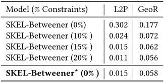
Recognized table text (check against the image)
| Model (% Constraints) | L2P | GeoR |
|---|---|---|
| SKEL-Betweener (0%) | 0.302 | 0.177 |
| SKEL-Betweener (10% ) | 0.024 | 0.072 |
| SKEL-Betweener (15% ) | 0.015 | 0.062 |
| SKEL-Betweener (20% ) | 0.011 | 0.056 |
| SKEL-Betweener* (0% ) | 0.015 | 0.058 |
In Table 1, we compare our SKEL-Betweener model to TwoStage model on various metrics. Similar to [Qin et al. 2022], we measure the !2 distance on global positions, L2P. For global rotations, we instead measure Geodesic distance, GeoR, as it gives a geometrically meaningful distance between two orientations. To measure how closely the intermediate joint constraints are satisfied, we also measure L2P and GeoR for positional and rotational constraints respectively. Additionally, to demonstrate the better generalization of our SKEL-Betweener model, we measure constraints satisfaction while perturbing the intermediate constraints with random noise of up to 28 cm to create realistic but out of distribution samples (OOD constraints). For measuring in distribution metrics, the intermediate constraints are sampled with 5% probability and for out of distribution metrics, we lower it to 1% probability to prevent infeasible constraints sets.
Comparing L2P and GeoR between the two models, we see that both have comparable performance with TwoStage being better on Lafan1 dataset and our model on DanceDB dataset. However, since we focus on controllable motion authoring in this work, satisfying constraints well is equally important. We see that our model consistently outperforms TwoStage both on in distribution and out of distribution constraints across all datasets with the exception of in distribution positional constraints on Lafan1 dataset.
Lastly, we compare motion reconstruction of our SKEL-Betweener model trained with and without base motion preservation in Table 2. When trained for motion preservation, it can easily output very accurate motion by simply keeping the input unchanged. We see in Table 2 that 15% to 20% additional constraints must be provided to SKEL-Betweener without base motion preservation for comparable motion reconstruction. This is expected as without the base motion, the model predicts the most likely motion given only sparse input and thus some of the high frequency details are lost. Additionally, these added constraints also effect the area of influence of any edit. In contrast, any edit using our SKEL-Betweener model with base motion can effect the complete sequence, highlighting the need to specifically train for motion editing by conditioning on dense data.
5.4 User Study
We implemented our Neural Motion Rig (NMR) in Blender [Blender Foundation 2024] an open source 3D authoring software. To validate the effectiveness of NMR, we conduct a user study involving 20 participants, including 3 professional animators, 15 novice users, and 2 of the authors. The authors represent a category of users that are both familiar with the Skel-Betweener and the comparative animation tool. Note that the participating authors were not involved with the setup of the user study.

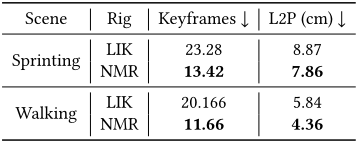
Recognized table text (check against the image)
| Scene | Rig | Keyframes # | L2P (cm) # |
|---|---|---|---|
| Sprinting | LIK | 23.28 | 8.87 |
| NMR | 13.42 | 7.86 | |
| Walking | LIK | 20.166 11.66 | 5.84 4.36 |
| NMR |
The participants were invited to complete a 30 frame-long animation sample, using NMR and another animation tool. For the professional animators this second animation tool was a traditional character rig with Forward and Inverse Kinematic handles, created with Mixamo's [Adobe 2024] automatic character rigging feature. Since using a professional rig requires significant experience, we instead let novice users employ a Learned Inverse Kinematics (LIK) system based on [Oreshkin et al. 2022] to pose in-between frames. Further details about the animation systems are included in Appendix D.1.
For the novice users, the animation was randomly selected between two motions. As there were only three professional animators, they all animated the same motion. Lastly, the two authors recreated both motions. Additionally, each participant was given a soft time limit of fifteen minutes per task and the tasks were randomly ordered to avoid any learning bias. Lastly, we conducted a survey after the tasks to gather their subjective thoughts about the two tools. The authors did not participate in the survey.
To measure the efficiency of NMR, we measure the L2P metric on the world positions between the user motion and the reference once every minute. In Fig. 6, the mean error over time for the three participant groups is plotted. Individual performance of each user are provided in Appendix D.4. For each group, using NMR gives the most accurate recreation of the reference animation. Note that using the Mixamo Rig, the animators could perfectly recreate the reference animation given sufficient time, however, this would largely exceed the time limit of fifteen minutes. Comparing the animation systems at the start, we see that due to the better interpolation of NMR, the users begin from a closer initial recreation compared to LIK and the Mixamo Rig. Once the users start to animate, they make similar progress, however they end up with improved results with NMR, indicated by the consistent gap between the respective curves. Interestingly, one can see in Fig. 6a that both the novice users and the professional artists achieved similar final errors when using NMR, though the artists were faster at the beginning of the task.
Finally, Table 3 compares the average end result for the novice users. While the users spent similar times using both tools, using NMR gives better recreation and requires much fewer keyframes to be added compared to LIK. This highlights the better constraints efficiency of each constraint in NMR. The number of constraints added by each user throughout the task is included in the Appendix D.4.

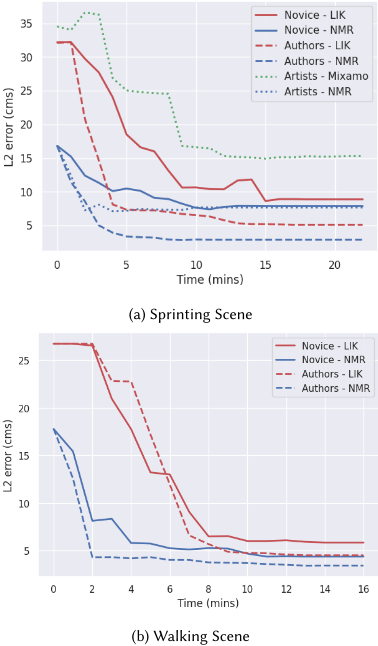
The study also revealed that some UI details could be improved for a better experience. As shown in Fig. 7, a particular joint is represented via a cyan or pink sphere at each time step. Without any additional information, the participants had difficulties recognising which sphere corresponded to which time step. Similarly, when a joint-in particular a foot-is stationary, constraints frommultiple time steps start to overlap. This again makes selecting the desired constraint harder. For future work, highlighting the constraints for the current frame or adding tooltip text in the UI could help users find the relevant constraint more easily.
More experienced users noted that adding a new constraint without moving it in space caused the prediction to change. This differed from their prior experience and caused confusion during the task. Besides these limited difficulties, the users were able to generate better results and preferred the better interpolation of NMR.
6 DISCUSSION AND LIMITATIONS
Animators use motion paths in editing software such as Maya [Autodesk 2024] and Blender to visualize the path of a joint through time. However, motion paths use naive linear or spherical interpolation. As shown in Fig. 7, we implement neural motion curves (NMCs) in the 3D viewport as the handles for NMR. This allows us to visualize and manipulate the entire motion sequence based on data statistics. While we can visualize any number of NMCs, we found that beyond four curves the scene starts to get cluttered. Furthermore, by visualising only a few curves, users can easily discern the flow of the complete motion.

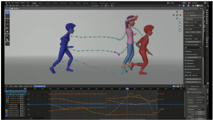
Since NMCs may overlap in 3D for cyclic or static motions, we also implemented 1D NMCs in the graph editor, see Fig. 7. There the time is unrolled for a precise temporal selection. These detached 1D NMCs are also better suited for rotational handles that do not have an associated position in 3D space.
Due to using a learnt approach, our model suffers the same limitation as [Qin et al. 2022] and other learnt motion models for satisfying hard constraints. Even when some constraint is provided, the predicted output can contain some offset due to solving the Inverse Kinematics problem implicitly within the model. Reducing this offset is critical to guarantee the artists a non-destructive workflow as they are adding and moving constraints. Using an optimization post process can help satisfy constraints more strongly but can lead to unrealistic poses and slow down inference.
Another consequence of a learnt approach is that in an iterative workflow, if a new constraint is added with the location or orientation from the previous prediction, the new predicted motion changes due to change in input. As also noted in the user study, artists expect identical output, as generated by the traditional rig.
As such, our Neural Motion Rig does not yet offer as precise control as traditional rigs required for production ready animations. However, given the intuitive controls and large time savings in generating rough animations shown by the user study, our interface can be used for efficient layout and also by non-experts.
Due to using a local attention architecture, our current receptive field grows only linearly. As animators add at least one keyframe every 10 frames, this was not an issue in this work that supports generating animations up to 30 frames. However to extend our work to longer motion sequences, incorporating temporal pooling would be required to maintain real-time control.
Another extension of our work could explore adding an area of influence parameter for each intermediate constraint. By specifying a spatial or temporal window where a constraint can have an effect, artists can control the motion generated more closely.
7 CONCLUSION
In this work, we introduced SKEL-Betweener, a Neural Motion Rig for authoring entire motion sequences from joint-level controls. Our novel graph-based architecture and training scheme delivers improved conformity to user controls, and enables motion editing; which has never been shown before with neural motion models. We designed our system to use constraint handles similar to familiar traditional rigging handles and to be real-time to enable interactive motion authoring. Through a user study, we validated that our system enables faster and easier animating. We also show that our model matches existing state of the art in motion inbetweening and outperforms them in satisfying constraints and generalizing to unseen configurations.
ACKNOWLEDGMENTS
We would like to thank our artists Violaine Fayolle and Doriano vanEssen for trying out early versions of our work and providing invaluable feedback. Additionally, we would also like to thank the users in our user study for volunteering their time.
REFERENCES
Adobe. 2024. Mixamo. https://www.mixamo.com/#/
Dhruv Agrawal, Martin Guay, Jakob Buhmann, Dominik Borer, and Robert W. Sumner. 2023. Pose and Skeleton-aware Neural IK for Pose and Motion Editing. In SIGGRAPH Asia 2023 Conference Papers. 1-10.
Autodesk. 2024. Maya. https://www.autodesk.com/products/maya/
Blender Foundation. 2024. Blender. https://www.blender.org/
Jinxiang Chai and Jessica K Hodgins. 2007. Constraint-based motion optimization using a statistical dynamic model. In ACM SIGGRAPH 2007 papers. 8-es.
Loïc Ciccone, Cengiz Öztireli, and Robert W Sumner. 2019. Tangent-space optimization for interactive animation control. ACM Transactions on Graphics (TOG) 38, 4 (2019), 1-10.
Setareh Cohan, Guy Tevet, Daniele Reda, Xue Bin Peng, and Michiel van de Panne. 2024. Flexible Motion In-betweening with Diffusion Models. arXiv preprint arXiv:2405.11126 (2024).
Vijay Prakash Dwivedi and Xavier Bresson. 2021. A Generalization of Transformer Networks to Graphs. AAAI Workshop on Deep Learning on Graphs: Methods and Applications (2021).
Epic Games, Inc. 2024. Unreal Engine. https://www.unrealengine.com/en-US
Michael Gleicher. 1997. Motion editing with spacetime constraints. In Proceedings of the 1997 symposium on Interactive 3D graphics. 139-ff.
Chuan Guo, Shihao Zou, Xinxin Zuo, Sen Wang, Wei Ji, Xingyu Li, and Li Cheng. 2022. Generating Diverse and Natural 3D Human Motions From Text. In Proceedings of the IEEE/CVF Conference on Computer Vision and Pattern Recognition (CVPR). 5152-5161.
Félix G Harvey and Christopher Pal. 2018. Recurrent transition networks for character locomotion. In SIGGRAPH Asia 2018 Technical Briefs. 1-4.
Félix G Harvey, Mike Yurick, Derek Nowrouzezahrai, and Christopher Pal. 2020. Robust motion in-betweening. ACM Transactions on Graphics (TOG) 39, 4 (2020), 60-1.
Daniel Holden, Jun Saito, and Taku Komura. 2016. A deep learning framework for character motion synthesis and editing. ACM Transactions on Graphics (TOG) 35, 4 (2016), 1-11.
Ludovic Hoyet, Kenneth Ryall, Rachel McDonnell, and Carol O'Sullivan. 2012. Sleight of hand: perception of finger motion from reduced marker sets. In Proceedings of the ACM SIGGRAPH symposium on interactive 3D graphics and games. 79-86.
Korrawe Karunratanakul, Konpat Preechakul, Emre Aksan, Thabo Beeler, Supasorn Suwajanakorn, and Siyu Tang. 2023a. Optimizing Diffusion Noise Can Serve As Universal Motion Priors. arXiv preprint arXiv:2312.11994 (2023).
Korrawe Karunratanakul, Konpat Preechakul, Supasorn Suwajanakorn, and Siyu Tang. 2023b. Gmd: Controllable human motion synthesis via guided diffusion models. arXiv preprint arXiv:2305.12577 (2023).
Jehee Lee and Sung Yong Shin. 1999. A hierarchical approach to interactive motion editing for human-like figures. In Proceedings of the 26th annual conference on Computer graphics and interactive techniques. 39-48.
Hung Yu Ling, Fabio Zinno, George Cheng, and Michiel Van De Panne. 2020. Character controllers using motion vaes. ACM Transactions on Graphics (TOG) 39, 4 (2020), 40-1.
Matthew Loper, Naureen Mahmood, Javier Romero, Gerard Pons-Moll, and Michael J. Black. 2015. SMPL: A Skinned Multi-Person Linear Model. ACM Trans. Graphics (Proc. SIGGRAPH Asia) 34, 6 (Oct. 2015), 248:1-248:16.
Naureen Mahmood, Nima Ghorbani, Nikolaus F. Troje, Gerard Pons-Moll, and Michael J. Black. 2019. AMASS: Archive of Motion Capture as Surface Shapes. In International Conference on Computer Vision. 5442-5451.
Jianyuan Min, Yen-Lin Chen, and Jinxiang Chai. 2009. Interactive generation of human animation with deformable motion models. ACM Transactions on Graphics (TOG) 29, 1 (2009), 1-12.
Boris N. Oreshkin, Florent Bocquelet, Felix G. Harvey, Bay Raitt, and Dominic Laflamme. 2022. ProtoRes: Proto-Residual Network for Pose Authoring via Learned Inverse Kinematics. In International Conference on Learning Representations. https: //openreview.net/forum?id=s03AQxehtd_
Boris N Oreshkin, Antonios Valkanas, Félix G Harvey, Louis-Simon Ménard, Florent Bocquelet, and Mark J Coates. 2023. Motion In-Betweening via Deep Δ-Interpolator. IEEE Transactions on Visualization and Computer Graphics (2023).
Jia Qin, Youyi Zheng, and Kun Zhou. 2022. Motion In-Betweening via Two-Stage Transformers. ACM Trans. Graph. 41, 6 (2022), 184-1.
Surangika Ranathunga, En-Shiun Annie Lee, Marjana Prifti Skenduli, Ravi Shekhar, Mehreen Alam, and Rishemjit Kaur. 2023. Neural machine translation for lowresource languages: A survey. Comput. Surveys 55, 11 (2023), 1-37.
Paul Starke, Sebastian Starke, Taku Komura, and Frank Steinicke. 2023. Motion inbetweening with phase manifolds. Proceedings of the ACM on Computer Graphics and Interactive Techniques 6, 3 (2023), 1-17.
Sebastian Starke, Ian Mason, and Taku Komura. 2022. DeepPhase: periodic autoencoders for learning motion phase manifolds. ACM Transactions on Graphics (TOG) 41, 4 (2022), 1-13.
Xiangjun Tang, He Wang, Bo Hu, Xu Gong, Ruifan Yi, Qilong Kou, and Xiaogang Jin. 2022. Real-time controllable motion transition for characters. ACM Transactions on Graphics (TOG) 41, 4 (2022), 1-10.
Xiangjun Tang, Linjun Wu, He Wang, Bo Hu, Xu Gong, Yuchen Liao, Songnan Li, Qilong Kou, and Xiaogang Jin. 2023. Rsmt: Real-time stylized motion transition for characters. In ACM SIGGRAPH 2023 Conference Proceedings. 1-10.
Guy Tevet, Sigal Raab, Brian Gordon, Yoni Shafir, Daniel Cohen-or, and Amit Haim Bermano. 2023. Human Motion Diffusion Model. In The Eleventh International Conference on Learning Representations. https://openreview.net/forum?id=SJ1kSyO2jwu
Jonathan Tseng, Rodrigo Castellon, and C. Karen Liu. 2022. EDGE: Editable Dance Generation FromMusic. https://doi.org/10.48550/ARXIV.2211.10658
Shuhei Tsuchida, Satoru Fukayama, Masahiro Hamasaki, and Masataka Goto. 2019. AIST Dance Video Database: Multi-genre, Multi-dancer, and Multi-camera Database for Dance Information Processing. In Proceedings of the 20th International Society for Music Information Retrieval Conference, ISMIR 2019. Delft, Netherlands.
Unity Technologies. 2024. Unity. https://unity.com/
Ashish Vaswani, Noam Shazeer, Niki Parmar, Jakob Uszkoreit, Llion Jones, Aidan N Gomez, Łukasz Kaiser, and Illia Polosukhin. 2017. Attention is all you need. Advances in neural information processing systems 30 (2017).
AndrewWitkin and Zoran Popovic. 1995. Motion warping. In Proceedings of the 22nd annual conference on Computer graphics and interactive techniques. 105-108.
Yiming Xie, Varun Jampani, Lei Zhong, Deqing Sun, and Huaizu Jiang. 2024. OmniControl: Control Any Joint at Any Time for Human Motion Generation. In The Twelfth International Conference on Learning Representations. https://openreview. net/forum?id=gd0lAEtWso
Tianyi Zhang, Faisal Ladhak, Esin Durmus, Percy Liang, Kathleen McKeown, and Tatsunori B Hashimoto. 2024. Benchmarking large language models for news summarization. Transactions of the Association for Computational Linguistics 12 (2024), 39-57.
Xiaozheng Zheng, Zhuo Su, Chao Wen, Zhou Xue, and Xiaojie Jin. 2023. Realistic FullBody Tracking from Sparse Observations via Joint-Level Modeling. In Proceedings of the IEEE/CVF International Conference on Computer Vision (ICCV). 14678-14688.
Yi Zhou, Connelly Barnes, Jingwan Lu, Jimei Yang, and Hao Li. 2019. On the continuity of rotation representations in neural networks. In Proceedings of the IEEE/CVF Conference on Computer Vision and Pattern Recognition. 5745-5753.